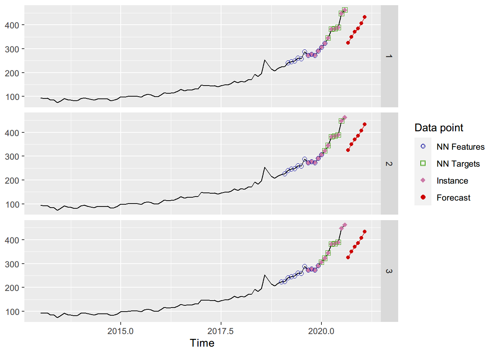
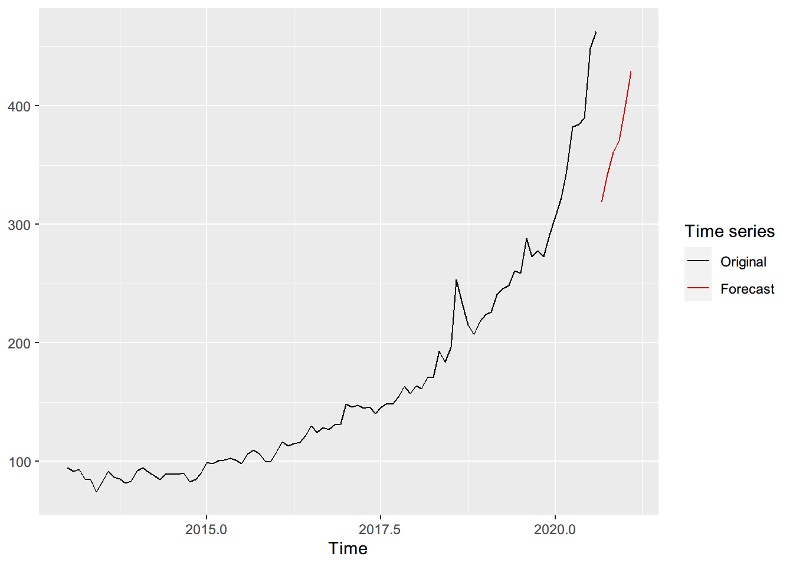

Machine Learning notes
2020-11-23
- 使用 RMarkdown 的
child参数，进行文档拼接。 - 这样拼接以后的笔记方便复习。
- 相关问题提交到 Issue
1 分类算法
1.1 K-临近回归（KNN）
KNN 是一种监督式机器学习算法，在分类问题 (classification) 中应用较广，但也可以作为一种非参数方法，用于回归分析 (regression) 进行预测。
下面简要介绍一下 KNN 算法的基本原理，并通过实例说明其在时间序列分析中的应用（附R代码）
基本原理（见隐藏内容）
1.1.1 基本原理
KNN 回归的基本思路是：对于一组包含特征空间 (Feature Space) 的样本，某个待测样本的目标属性（通常用一组向量表示，称为目标向量） 可以利用与其最相似（即在特征空间中相邻最近）的\(k\)个样本的目标向量来预测。
在实际处理中，所有已知的样本被称为训练样本。对于第\(i\)个训练样本，其包含一个\(n\)-维特征向量 (Fearure Vector): \[(f_1^i,f_2^i,f_3^i, \ldots ,f_n^i)\] 这个向量描述了该实例和关联的\(m\)-维目标向量(Target Vector): \[(t_1^i,t_2^i,t_3^i, \ldots ,t_m^i)\]
对于一个给定的新样本，其特征向量已知，为\((q_1,q_2,q_3, \ldots ,q_n)\)，但目标向量未知。KNN 回归的工作，就是利用待测样本已知的特征向量，找出与其相似的训练样本，并利用这些训练样本的目标向量来预测待测样本的目标向量。
KNN 回归决策有三大基本要素：距离度量方法、k值的选择、回归决策规则。接下来逐个进行说明：
1.1.1.1 一、距离度量方法：
判断样本相似度的指标，一般选用特征向量空间中待测样本与训练样本的距离，在以下几种距离中，最广泛使用的为欧氏距离。
欧几里得距离 (Euclidean distance): \[ \begin{align*} \sqrt {\sum_{x=1}^n(f_x^i-q_x)^2} \end{align*} \]
曼哈顿距离 (Manhattan distance): \[ \sum_{x=1}^n|f_x^i-q_x| \]
- 海明距离 (Hamming distance): \[ D_h=\sum_{x=1}^n|f_x^i-q_x|= \begin{cases} 1, & \text{if } f_x^i \not= q_x \\ 0, & \text{if } f_x^i =q_x \end{cases} \]
1.1.1.2 二、k值的选择：
除了输入的样本点外，KNN模型实际上只有k一个参数，因此k的选取就显得至关重要。 如果k过大，模型变得简单，方差减小，但误差会增大；相应的，若k过小，模型的误差减小，但方差增大。因此，通常采用交叉验证的方法来获得最优的k值。
交叉验证 (Cross-validation) 也是机器学习的一种常用方法，简单来说，就是切分已知样本为训练组和验证组，选取不同的k值，利用训练组对模型进行训练，再利用验证组获得预测值与真实值之间的误差。通过比较误差大小，就可以获得最优的k值。
具体可参考: Duda R O, Hart P E, Stork D G. Pattern classification. 2nd ed. New York: Wiley, 2001.
1.1.1.3 三、回归决策规则：
其基本公式如下：\[\hat{f}(x)=Average[y_i|x_i\ {\sf{is}}\ {\sf{in}}\ N_k(x)]\]
得出的预测值，实际就是所选的相邻\(k\)个的平均值。
1.1.2 KNN算法的理论错误率:
（于剑. 机器学习 从公理到算法. 2017, p140）
设\(N\)个样本下最临近的平均错误率为\(P_N(e)\)，样本\(x\)的最近邻为\(x^{'} \in \{ x_1,x_2, \ldots, x_N\}\)，平均错误率可以写成 \[P_N(e)= \iint P_N(e|x,x^{'})p(x^{'}|x)dx^{'}p(x)dx\] \[P_N(e|x,x^{'})=1- \sum_{i=1}^c P(i|x)P(i|x^{'})\] 当\(N \rightarrow \infty\)时，\(P_N(e)\)的极限\(P=lim_{N \rightarrow \infty}P_N(e)\)，则可证明存在 \[P^* \leq P \leq P^*(2- \frac{c}{c-1} P^*)\] 其中\(P^*\)为贝叶斯错误率，也即理论上的最优分类错误率，\(c\)为类别个数，\(P\)为 KNN 算法的渐进错误率。1.1.3 在时间序列分析中的应用
KNN 回归也可用于处理时间序列。在这种情况下，样本点的目标向量，即是该样本在时间序列中的值向量；样本点的特征向量，是目标向量的一系列的滞后值。
例如，对于一个含有\(n\)个观测值的时间序列： \[t=\{x_1,x_2,x_3, \ldots,x_n \}\] 要预测其第\(n+1\)期的值，即求第\(n+1\)个样本点的目标向量\(x_{n+1}\),该待测样本相应的特征向量为\(m\)阶滞后项： \[\underbrace{\{x_{n-m+1},x_{n-m+2}, \ldots, x_{n-1},x_{n} \}}_m\] 最后是选择与第\(n+1\)个样本点最接近的\(k\)个训练样本，也即选择 KNN 回归的k值。
因此，从本质上说，KNN 回归在时间序列中的应用，建立的也是自回归模型，因此可以和 ARIMA 模型进行对比。
后面以一个具体的例子，来说明如何在R中实现 KNN 时间序列回归。
1.1.3.1 KNN in R：
在R中，与 KNN 回归相关的包为tsfknn
首先导入所需要的Timeseries数据，为2013年-2020年伊斯坦布尔交易所黄金期货的月度价格：
library(readxl)
xautry_df<-read_excel('xau_try.xlsx')
xautry_ts<-ts(xautry_df$price,start=c(2013,1),frequency=12)之后利用 tsfknn.knn_forecasting() 方法对该时间序列进行 KNN 回归。该方法涉及以下常用参数： \[\begin{gather} \rm{knn\_forecasting( TimeS,\ h,\ lags,\ k )} \\ \rm{TimeS:待预测的时间序列}\\ \rm{h:期望获得的预测值期数}\\ \rm{lags:使用的滞后期数}\\ \rm{k:KNN模型中的k值}\\ \end{gather}\]
library(tsfknn)
library(ggplot2)
pred<-knn_forecasting(xautry_ts,h=6,lag=1:12,k=3)
autoplot(pred,highlight = "neighbors",faceting = TRUE)
上图中，蓝色点为\(m\)期滞后点，本例中\(\text{lag}=1:12\)，即选择12期滞后；绿色点为\(h\)个待测样本，红色点为待测样本的预测值，本例中为预测6期；输入的\(k=3\)，则表示每一个预测点都由与其相邻的3个已知点平均得出。
在未知最优k的情况下，可以选择使用多个k值并求平均 (Martínez et al., 2017) 来提高预测精度。在本例中，k参数可以输入为一个向量，以此来进行多重k的KNN回归：
pred<-knn_forecasting(xautry_ts,h=6,lag=1:12,k=c(2,6))
autoplot(pred,highlight = "neighbors",faceting = TRUE)## Warning in autoplot.knnForecast(pred, highlight = "neighbors", faceting = TRUE): When several k are used it is not possible to see the
## neighbors
2 降维算法
2.1 主成分分析 (Principle Component Analysis)
2.1.1 PCA的作用
PCA的主要作用是降维。
如下图，数据点大部分都分布在\(x_2\)方向上，在\(x_1\)方向上的取值近似相同，那么对于有些问题就可以直接将\(x_1\)坐标的数值去掉，只取\(x_2\)坐标的值即可。但是有些情况不能直接这样取，例如：
这个时候就是PCA展现作用的时候了。黑色坐标系是原始坐标系，红色坐表系是我后面构建的坐标系，如果我的坐标系是红色的，那么这个问题是不是就和上面那个问题一样了，我只需要去掉\(y_2\)坐标系的数据即可。
2.1.2 PCA的数学原理
构建一个函数 \(f(X_{m \times n})\)，是这个函数可以将矩阵\(X_{m \times n}\) 降维，矩阵\(X\)是原始数据，矩阵的每一行是一个样本的特征向量，即矩阵\(X_{m\times n}\) 中有\(m\)个样本，每个样本有\(n\)个特征值。所以，所谓的降维，其实是减少\(n\)的数量。
假设降维后的结构为\(Z_{m \times k}\) ,其中\(k<n\)，那么PCA的数学表达可以这样表示： \[Z_{m×k}=f(X_{m×n}),k<n\]
为了找到上面说的\(f(x)\) 我们需要做一些工作，在线性空间中，矩阵可以表示为一种映射，所以上面的问题可以转化为寻找这样一个矩阵\(W\)，该矩阵可以实现上面的映射目的： \[Z_{m\times k} = W_{n\times k}X_{m\times n}\]
最大化新坐标轴上的方差，就是让数据更加分散： \[ \begin{equation} \max\limits_{w}\frac{1}{m}\sum\limits_{i}^{m}(z_i - \bar{z})^2 \\ s.t. \ \ \ \ \lVert W \rVert_2 = 1 \end{equation} \]
将上面的优化问题转化一下：
\[ \begin{align} &\ \ \ \ \ \max\limits_{w}\frac{1}{m}\sum\limits_{i}^{m}(z_i-\bar{z})^2\\ &=\max\limits_{w}\frac{1}{m}\sum\limits_{i}^{m}(wx_i-w\bar{x})^2\\ &=\max\limits_{w}\frac{1}{m}\sum\limits_{i}^{m}(w(x_i-\bar{x}))(w(x_i-\bar{x}))^T\\ &=\max\limits_{w}\frac{1}{m}\sum\limits_{i}^{m}(w(x_i-\bar{x})(x_i-\bar{x})^Tw^T )^T\\ &=\max\limits_{w}\frac{1}{m}w\sum\limits_{i}^{m}(x_i-\bar{x})(x_i-\bar{x})^Tw^T\\ &=\max\limits_{w}\frac{1}{m}wCov(x)w^T \end{align} \]
最终目标转化为： \[ \begin{equation} =\max\limits_{w}\frac{1}{m}wCov(x)w^T \\ s.t. \ \ \ \ \lVert W \rVert_2 = 1 \end{equation} \]